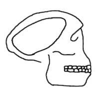
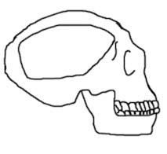
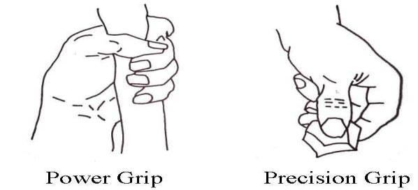

They appeared in Africa around 2.5 million years ago and survived for at least fifty thousand years. It is assumed that a group of them evolved into the next species, Homo erectus. The fossils of Homo Habilis are found at Olduvai Gorge in North Tanzania and in Koobi Fora region of North Kenya. These are: OH–7, OH–13, OH–16, OH–24, KNH–ER 1470, KNH–ER 1813, and KNH–ER 1805. The finds are fragments of cranium, jaws, teeth, and hand bones. Evolutionists suggest, based on the increased cranial capacity, that Homo habilis were descendants of Australopithecus. They are believed to have had an increased height and walked on two legs. Evolutionists estimate their average height to be 1.52 meters and average weight to be 45 kg. ―Only a few post cranial parts have been discovered. Some limb bones from Olduvai and Kobi Fora have been grouped tentatively with H. Habilis on the strength of general anatomic similarity to later humans. These fossils however, are not associated with teeth or skulls, and it is probably not appropriate to use them as the basis for describing early Homo‖ – The New Encyclopedia Britannica. In 1986, a fossil of Homo Habilis was discovered in Olduvai Gorge (OH–62). It is the only fossil with which the limbs are found. It shows that Homo Habilis was a very small hominid. Its arm was long relative to leg length. It had body proportions that dramatically differed from those of more modern hominids. ―The find is especially important because of the associated limbs, which show that OH 62 is a very small hominid indeed. The arm is long relative to leg length so that this individual has body proportions, which differ dramatically from those of more modern hominids.‖– The New Encyclopedia Britannica. The fossil (OH–62) is not given due importance because it dismisses the only species (Homo Habilis) that shows the sign of increasing brain in Hominid Branch. Actually, Homo habilis fails to fit into the evolutionary chain and does not fill the missing link.
তারা প্রায় 2.5 মিলিয়ন বছর আগে আফ্রিকায় আবির্ভূত হয়েছিল এবং কমপক্ষে পঞ্চাশ হাজার বছর ধরে বেঁচে ছিল। ধারণা করা হয় যে তাদের একটি দল পরবর্তী প্রজাতি হোমো ইরেক্টাসে বিবর্তিত হয়েছিল। হোমো হ্যাবিলিসের জীবাশ্ম উত্তর তানজানিয়ার ওল্ডুভাই গর্জে এবং উত্তর কেনিয়ার কুবি ফোরা অঞ্চলে পাওয়া যায়। এগুলি হল: OH-7, OH-13, OH-16, OH-24, KNH-ER 1470, KNH-ER 1813, এবং KNH-ER 1805। আবিষ্কৃত হল ক্রেনিয়াম, চোয়াল, দাঁত এবং হাতের হাড়ের টুকরো। বিবর্তনবাদীরা পরামর্শ দেন, বর্ধিত ক্র্যানিয়াল ক্ষমতার উপর ভিত্তি করে, হোমো হ্যাবিলিস ছিলেন অস্ট্রালোপিথেকাসের বংশধর। তাদের উচ্চতা বেড়েছে এবং দুই পায়ে হেঁটেছে বলে ধারণা করা হয়। বিবর্তনবাদীরা তাদের গড় উচ্চতা 1.52 মিটার এবং গড় ওজন 45 কেজি অনুমান করে। - মাত্র কয়েকটি পোস্ট ক্র্যানিয়াল অংশ আবিষ্কৃত হয়েছে। ওল্ডুভাই এবং কোবি ফোরা থেকে কিছু অঙ্গ-প্রত্যঙ্গের হাড় এইচ. হ্যাবিলিসের সাথে সাময়িকভাবে গোষ্ঠীভুক্ত করা হয়েছে পরবর্তী মানুষের সাথে সাধারণ শারীরিক মিলের কারণে। যদিও এই জীবাশ্মগুলি দাঁত বা মাথার খুলির সাথে সম্পর্কিত নয় এবং প্রাথমিক হোমো - দ্য নিউ এনসাইক্লোপিডিয়া ব্রিটানিকা বর্ণনা করার জন্য ভিত্তি হিসাবে ব্যবহার করা সম্ভবত উপযুক্ত নয়। 1986 সালে, ওল্ডুভাই গর্জে (OH–62) হোমো হ্যাবিলিসের একটি জীবাশ্ম আবিষ্কৃত হয়। এটিই একমাত্র জীবাশ্ম যার সাহায্যে অঙ্গ-প্রত্যঙ্গ পাওয়া যায়। এটি দেখায় যে হোমো হ্যাবিলিস একটি খুব ছোট হোমিনিড ছিল। পায়ের দৈর্ঘ্যের তুলনায় এর বাহু লম্বা ছিল। এটির শরীরের অনুপাত ছিল যা নাটকীয়ভাবে আরও আধুনিক হোমিনিডদের থেকে আলাদা। - খুঁজে পাওয়া বিশেষভাবে গুরুত্বপূর্ণ কারণ সংশ্লিষ্ট অঙ্গ-প্রত্যঙ্গের কারণে, যা দেখায় যে OH 62 প্রকৃতপক্ষে একটি খুব ছোট হোমিনিড। পায়ের দৈর্ঘ্যের তুলনায় বাহুটি লম্বা হয় যাতে এই ব্যক্তির শরীরের অনুপাত থাকে, যা আরও আধুনিক হোমিনিডদের থেকে নাটকীয়ভাবে আলাদা।‖– দ্য নিউ এনসাইক্লোপিডিয়া ব্রিটানিকা। জীবাশ্মকে (OH–62) যথাযথ গুরুত্ব দেওয়া হয় না কারণ এটি একমাত্র প্রজাতিকে (হোমো হ্যাবিলিস) খারিজ করে যা হোমিনিড শাখায় মস্তিষ্কের বৃদ্ধির লক্ষণ দেখায়। প্রকৃতপক্ষে, হোমো হ্যাবিলিস বিবর্তনীয় শৃঙ্খলে ফিট করতে ব্যর্থ হয় এবং অনুপস্থিত লিঙ্কটি পূরণ করে না।
5d. Homo Erectus
5d. হোমো ইরেক্টাস
Homo erectus follows Homo habilis in the evolutionary timeline. This species lived in almost every part of the Old World, with fossils found in Java, China, and Africa. The remains mainly consist of cranial bones, mandibles, and teeth. A few femurs from the postcranial region have been discovered; these are robust but similar to human femurs. The species exhibited several geographic variants. The earliest fossil evidence dates back to 1.9 million years ago and extends to about 143,000 years ago. Only a few femurs have been found from the lower part of the body. Observing the head-neck attachment closer to the chin, evolutionists suggest that Homo erectus were upright animals. However, a tree-dwelling animal could exhibit a similar feature. Homo erectus had an increased cranial capacity, averaging about 1043 cc.
হোমো ইরেক্টাস বিবর্তনীয় টাইমলাইনে হোমো হ্যাবিলিসকে অনুসরণ করে। জাভা, চীন এবং আফ্রিকাতে পাওয়া জীবাশ্ম সহ এই প্রজাতিটি পুরানো বিশ্বের প্রায় প্রতিটি অংশে বাস করত। দেহাবশেষে প্রধানত ক্র্যানিয়াল হাড়, ম্যান্ডিবল এবং দাঁত থাকে। পোস্টক্র্যানিয়াল অঞ্চল থেকে কয়েকটি ফিমার আবিষ্কৃত হয়েছে; এগুলো শক্ত কিন্তু মানুষের ফিমারের মতো। প্রজাতির বিভিন্ন ভৌগলিক বৈচিত্র প্রদর্শন করা হয়েছে। প্রাচীনতম জীবাশ্ম প্রমাণ 1.9 মিলিয়ন বছর আগের এবং প্রায় 143,000 বছর আগে পর্যন্ত প্রসারিত। শরীরের নিচের অংশ থেকে মাত্র কয়েকটি ফিমার পাওয়া গেছে। চিবুকের কাছাকাছি মাথা-ঘাড়ের সংযুক্তি পর্যবেক্ষণ করে, বিবর্তনবাদীরা পরামর্শ দেন যে হোমো ইরেক্টাস ছিল ন্যায়পরায়ণ প্রাণী। যাইহোক, একটি গাছে বসবাসকারী প্রাণী একই বৈশিষ্ট্য প্রদর্শন করতে পারে। হোমো ইরেক্টাসের ক্র্যানিয়াল ক্ষমতা বৃদ্ধি পেয়েছে, গড় প্রায় 1043 cc।
FIGURE 24.42: Homo Erectus Skull

চিত্র 24_42 / Figure 24_42
চিত্র 24.42: হোমো ইরেক্টাস স্কাল
চিত্র 24_42 / Figure 24_42
They had skulls similar to those of apes. The skull bones were very thick, with a low braincase, a jutting brow ridge, a receding forehead, and an occipital torus. They had wide noses, heavy jaws, and large front teeth. It is likely that Homo erectus resembled a type of gorilla. Many paleoanthropologists believe that modern humans could not have evolved from Homo erectus. ―The skulls of the Homo Erectus fossils show other characteristics of their physical appearance. The braincase is low, and the skull bones are thick. They have jutting brow ridge and a markedly thickened area of bone at the hind end of the skull called occipital torus. The forehead recedes, and the nose, jaws, and palate are wide. The front teeth are larger even than Australopithecus an arctic trait that occurs in apes but in no other hominids. It is generally agreed, however that the dentition is hominid and not ape-like. These mixed traits are puzzling. Some paleoanthropologists see thing as specialized features characteristic of neither Homo sapiens not the ape and question whether Homo Erectus evolved towards Homo sapiens. According to these paleoanthropologists, H. Erectus wandered off the main evolutionary line and could not have been an ancestor to modern humans. This appears to leave two possibilities. Either H. Erectus with his thick cranium and outsize dentition was not on the direct evolutionary line from Australopithecus to H. Sapiens, or H. Erectus evolved specialized features from Australopithecus and then lost them again in the transition to H. sapiens.‖ – The New Encyclopedia Britannica. ―The total pattern of the bodily structure of H. Erectus as preserved in the bones is rather different from that of Homo sapiens. Parts of the post-cranial skeleton are robust but otherwise generally comparable to those of modern humans. The brain is relatively small, though not so small as that as Australopithecus and H. Habilis. In addition, in this hominid‘s thick skull bones and extra ordinarily developed eyebrow ridge and occipital torus, some investigators say that they see unique, specialized features, not characteristic either of its presumed ancestors or of apes and not pointing to H. sapiens as the direction of subsequent evolution. Some scientists even infer that these last traits show H. Erectus to have specialized so far off the modern human line that it could not have been ancestral to H. sapiens.‖ – The New Encyclopedia Britannica. Fossil evidence clearly shows that Homo erectus evolved into the next species, Homo neanderthalensis. 5e. Homo Neanderthalensis (The Neanderthal)
তাদের মাথার খুলি ছিল বনমানুষের মতো। মাথার খুলির হাড়গুলি খুব মোটা ছিল, যার মধ্যে ব্রেনকেস কম ছিল, একটি ভ্রুকুটি ছিল, একটি পিছিয়ে যাওয়া কপাল এবং একটি অসিপিটাল টরাস ছিল। তাদের চওড়া নাক, ভারী চোয়াল এবং সামনের বড় বড় দাঁত ছিল। সম্ভবত হোমো ইরেক্টাস এক ধরনের গরিলার মতো ছিল। অনেক প্যালিওনথ্রোপোলজিস্ট বিশ্বাস করেন যে আধুনিক মানুষ হোমো ইরেক্টাস থেকে বিবর্তিত হতে পারেনি। - হোমো ইরেক্টাস ফসিলের মাথার খুলি তাদের শারীরিক গঠনের অন্যান্য বৈশিষ্ট্য দেখায়। ব্রেনকেস কম, এবং মাথার খুলির হাড় পুরু। তাদের মাথার খুলির পিছনের প্রান্তে ভ্রু কুঁচি এবং অক্সিপিটাল টরাস নামক হাড়ের একটি উল্লেখযোগ্যভাবে ঘন অংশ রয়েছে। কপাল সরে যায় এবং নাক, চোয়াল এবং তালু প্রশস্ত হয়। সামনের দাঁতগুলি অস্ট্রালোপিথেকাসের চেয়েও বড় একটি আর্কটিক বৈশিষ্ট্য যা বনমানুষের মধ্যে দেখা যায় তবে অন্য কোনও হোমিনিডগুলিতে দেখা যায় না। এটি সাধারণত একমত যে, দাঁতটি হোমিনিড এবং বানরের মতো নয়। এই মিশ্র বৈশিষ্ট্যগুলি বিস্ময়কর। কিছু প্যালিওনথ্রোপোলজিস্ট জিনিসটিকে বিশেষ বৈশিষ্ট্য হিসেবে দেখেন যা হোমো স্যাপিয়েন্সের বৈশিষ্ট্য নয়, এপ নয় এবং প্রশ্ন করেন যে হোমো ইরেক্টাস হোমো সেপিয়েন্সের দিকে বিবর্তিত হয়েছে কিনা। এই প্যালিওনথ্রোপোলজিস্টদের মতে, এইচ. ইরেক্টাস মূল বিবর্তন লাইন থেকে দূরে সরে গিয়েছিলেন এবং আধুনিক মানুষের পূর্বপুরুষ হতে পারতেন না। এটি দুটি সম্ভাবনা ছেড়ে বলে মনে হচ্ছে। হয় এইচ. ইরেক্টাস তার পুরু ক্র্যানিয়াম এবং আউটসাইজ ডেন্টিশন সহ অস্ট্রালোপিথেকাস থেকে এইচ. স্যাপিয়েন্স পর্যন্ত সরাসরি বিবর্তনীয় লাইনে ছিল না, বা এইচ. ইরেক্টাস অস্ট্রালোপিথেকাস থেকে বিশেষ বৈশিষ্ট্যগুলি বিবর্তিত হয়েছিল এবং তারপরে এইচ. সেপিয়েন্সে রূপান্তরিত হওয়ার সময় সেগুলি আবার হারিয়েছিল। - দ্য নিউ এনসাইক্লোপিডিয়া ব্রিটানিকা। - হাড়ের মধ্যে সংরক্ষিত এইচ. ইরেক্টাসের শারীরিক গঠনের মোট প্যাটার্ন হোমো সেপিয়েন্সের থেকে ভিন্ন। পোস্ট-ক্র্যানিয়াল কঙ্কালের অংশগুলি মজবুত কিন্তু অন্যথায় সাধারণত আধুনিক মানুষের সাথে তুলনীয়। মস্তিষ্ক তুলনামূলকভাবে ছোট, যদিও অস্ট্রালোপিথেকাস এবং এইচ হ্যাবিলিসের মতো এত ছোট নয়। উপরন্তু, এই হোমিনিডের পুরু মাথার খুলির হাড় এবং অতি সাধারণভাবে বিকশিত ভ্রু রিজ এবং অসিপিটাল টরাসে, কিছু তদন্তকারী বলেছেন যে তারা অনন্য, বিশেষ বৈশিষ্ট্যগুলি দেখেন, যা এর অনুমান পূর্বপুরুষ বা বনমানুষের বৈশিষ্ট্য নয় এবং পরবর্তী বিবর্তনের দিক হিসাবে এইচ স্যাপিয়েন্সকে নির্দেশ করে না। কিছু বিজ্ঞানী এমনকি অনুমান করেন যে এই শেষ বৈশিষ্ট্যগুলি দেখায় যে এইচ. ইরেক্টাস আধুনিক মানব রেখার বাইরে এতদূর বিশেষীকরণ করেছেন যে এটি এইচ. সেপিয়েন্সের পূর্বপুরুষ হতে পারে না। - নিউ এনসাইক্লোপিডিয়া ব্রিটানিকা। জীবাশ্ম প্রমাণ স্পষ্টভাবে দেখায় যে হোমো ইরেক্টাস পরবর্তী প্রজাতি, হোমো নিয়ান্ডারথালেনসিসে বিবর্তিত হয়েছিল। 5ই. হোমো নিয়ান্ডারথালেনসিস (দ্য নিয়ান্ডারথাল)
The species is called Homo neanderthalensis because its first fossil was discovered in Neanderthal, Germany. They had geographic variants across other continents. Homo neanderthalensis emerged between 200,000 and 100,000 years ago, and, as the fossil record shows, the entire species suddenly disappeared around 30,000 years ago.
প্রজাতিটিকে হোমো নিয়ান্ডারথালেনসিস বলা হয় কারণ এর প্রথম জীবাশ্ম জার্মানির নিয়ান্ডারথালে আবিষ্কৃত হয়েছিল। অন্যান্য মহাদেশ জুড়ে তাদের ভৌগলিক বৈচিত্র ছিল। হোমো নিয়ান্ডারথালেনসিস 200,000 থেকে 100,000 বছর আগে আবির্ভূত হয়েছিল, এবং জীবাশ্ম রেকর্ড দেখায়, প্রায় 30,000 বছর আগে পুরো প্রজাতি হঠাৎ করেই অদৃশ্য হয়ে গিয়েছিল।
FIGURE 24.43: Homo Neanderthalensis Skull

চিত্র 24_43 / Figure 24_43
চিত্র 24.43: হোমো নিয়ান্ডারথালেনসিস স্কাল
চিত্র 24_43 / Figure 24_43
Their development from Homo erectus is clearly visible. Homo neanderthalensis also had heavy skull bones with a longer and lower braincase. The face remained large and long, with a wide nose and a prominent brow ridge. Although their chewing muscles and cheeks were slightly reduced, their teeth remained large, similar to those of Homo erectus. They frequently used their mouths as a vise or a 'third hand.' In Asia and Africa, the facial massiveness of Neanderthal relatives was somewhat reduced. Their hand bones suggest a greater emphasis on power grip rather than precision grip. FIGURE 24.44: Power Grip

চিত্র 24_44 / Figure 24_44
হোমো ইরেক্টাস থেকে তাদের বিকাশ স্পষ্টভাবে দৃশ্যমান। হোমো নিয়ান্ডারথালেনসিসেরও মাথার খুলির হাড় ছিল লম্বা এবং নিচের ব্রেনকেস। মুখটি বড় এবং লম্বা, একটি প্রশস্ত নাক এবং একটি বিশিষ্ট ভ্রু রিজ সহ। যদিও তাদের চিবানোর পেশী এবং গাল কিছুটা কমানো হয়েছিল, তবে তাদের দাঁতগুলি হোমো ইরেক্টাসের মতোই বড় ছিল। তারা প্রায়শই তাদের মুখকে ভিস বা 'তৃতীয় হাত' হিসাবে ব্যবহার করত। এশিয়া এবং আফ্রিকায়, নিয়ান্ডারথাল আত্মীয়দের মুখের বিশালতা কিছুটা হ্রাস পেয়েছে। তাদের হাতের হাড়গুলি নির্ভুল গ্রিপের চেয়ে পাওয়ার গ্রিপের উপর বেশি জোর দেওয়ার পরামর্শ দেয়। চিত্র 24.44: পাওয়ার গ্রিপ
চিত্র 24_44 / Figure 24_44
The way we hold a pen to write is called precision grip, and the way we hold a rope to climb is called power grip.
লেখার জন্য আমরা যেভাবে একটি কলম ধরে রাখি তাকে বলা হয় যথার্থ গ্রিপ, এবং যেভাবে আমরা একটি দড়ি ধরে আরোহণ করি তাকে পাওয়ার গ্রিপ বলে।
FIGURE 24.45: Precision Grip

চিত্র 24_45 / Figure 24_45
চিত্র 24.45: যথার্থ গ্রিপ
চিত্র 24_45 / Figure 24_45
They had large chests, broad shoulders, and extremely muscular upper limbs. Their pelvis, legs, and toes suggest they needed more irregular lateral movement during locomotion. Neanderthals lived in small groups and were capable of making stone tools, as well as wooden flakes and spears. Evidence of charcoal and reddened earth deposits at their sites indicates that they had also domesticated fire. They relied entirely on hunting, with little evidence suggesting they consumed plant foods. The small size of their sites and the shallow depth of debris indicate that they frequently moved from place to place. Fossil evidence shows a high frequency of traumatic injuries among Homo neanderthalensis. The remains reveal signs of serious wounds, sprains, and fractures. It is likely they would attack if they encountered individuals from other groups within their hunting territories. There are abundant evidences of nutritional deprivation during growth. The fossil record indicates that around 30,000 years ago, the entire species of Homo neanderthalensis suddenly vanished. Studies of Homo neanderthalensis DNA conducted in 1997 and subsequent years have confirmed that modern humans did not evolve from Homo neanderthalensis.
তাদের বড় বুক, চওড়া কাঁধ এবং অত্যন্ত পেশীবহুল উপরের অঙ্গ ছিল। তাদের পেলভিস, পা এবং পায়ের আঙ্গুলগুলি নির্দেশ করে যে লোকোমোশনের সময় তাদের আরও অনিয়মিত পার্শ্বীয় নড়াচড়ার প্রয়োজন। নিয়ান্ডারথালরা ছোট দলে বাস করত এবং তারা পাথরের সরঞ্জাম, সেইসাথে কাঠের ফ্লেক্স এবং বর্শা তৈরি করতে সক্ষম ছিল। তাদের সাইটে কাঠকয়লা এবং লাল মাটির জমার প্রমাণ ইঙ্গিত করে যে তারা গৃহপালিত আগুনও করেছিল। তারা সম্পূর্ণরূপে শিকারের উপর নির্ভর করত, সামান্য প্রমাণ সহ তারা উদ্ভিদের খাবার গ্রহণ করে। তাদের সাইটগুলির ছোট আকার এবং ধ্বংসাবশেষের অগভীর গভীরতা নির্দেশ করে যে তারা প্রায়শই এক জায়গায় স্থানান্তরিত হয়। জীবাশ্ম প্রমাণ হোমো নিয়ান্ডারথালেনসিসের মধ্যে আঘাতজনিত আঘাতের উচ্চ ফ্রিকোয়েন্সি দেখায়। দেহাবশেষগুলি গুরুতর ক্ষত, মচকে যাওয়া এবং ফ্র্যাকচারের লক্ষণ প্রকাশ করে। সম্ভবত তারা আক্রমণ করবে যদি তারা তাদের শিকার অঞ্চলের মধ্যে অন্য গোষ্ঠীর ব্যক্তিদের মুখোমুখি হয়। বৃদ্ধির সময় পুষ্টির অভাবের প্রচুর প্রমাণ রয়েছে। জীবাশ্ম রেকর্ড ইঙ্গিত করে যে প্রায় 30,000 বছর আগে, হোমো নিয়ান্ডারথালেনসিসের পুরো প্রজাতি হঠাৎ করেই বিলুপ্ত হয়ে যায়। 1997 এবং পরবর্তী বছরগুলিতে পরিচালিত হোমো নিয়ান্ডারথালেনসিস ডিএনএর অধ্যয়নগুলি নিশ্চিত করেছে যে আধুনিক মানুষ হোমো নিয়ান্ডারথালেনসিস থেকে বিবর্তিত হয়নি।
5f. Did humans evolved from Homo Erectus?
5f. মানুষ কি হোমো ইরেক্টাস থেকে বিবর্তিত হয়েছে?
It is clear that Homo erectus evolved into Homo neanderthalensis. The figures and chart below illustrate that both Homo erectus and Homo neanderthalensis are significantly distant from modern humans. Genus Erectus Neanderthal Human
এটা স্পষ্ট যে হোমো ইরেক্টাস হোমো নিয়ান্ডারথালেনসিসে বিবর্তিত হয়েছে। নীচের পরিসংখ্যান এবং চার্টগুলি দেখায় যে হোমো ইরেক্টাস এবং হোমো নিয়ান্ডারথালেনসিস উভয়ই আধুনিক মানুষের থেকে উল্লেখযোগ্যভাবে দূরে। জেনাস ইরেক্টাস নিয়ান্ডারথাল মানব
Features
বৈশিষ্ট্য
Brow ridge High High Plain Forehead Receding Receding Vertical Skull bone Thick Thick Thin Occipital Present Present Absent Torus Brain case Longer and Longer and Round and Lower Lower High Chin Full chin Full chin Prominent absent absent chin Teeth Large Large Small Head-neck Rearward Rearward Closer to attachment chin
ব্রো রিজ হাই হাই প্লেইন ফরহেড রিসিডিং রেসিডিং উল্লম্ব মাথার খুলির হাড় মোটা ঘন পাতলা পশ্চিমমুখী বর্তমান বর্তমান অনুপস্থিত টোরাস ব্রেন কেস লম্বা এবং লম্বা এবং গোলাকার এবং নিম্ন নিম্ন চিবুক সম্পূর্ণ চিবুক বিশিষ্ট অনুপস্থিত অনুপস্থিত চিবুক দাঁত বড় বড় ছোট ছোট ক্লোয়ারওয়ার্ড মাথার দিকে সংযুক্ত করা।
Homo erectus and Homo neanderthalensis shared some physical features that make them somewhat resemble humans. However, these similarities do not represent a significant evolutionary link. They merely indicate that creatures with human-like traits existed on Earth and became extinct around 30,000 years ago.
হোমো ইরেক্টাস এবং হোমো নিয়ান্ডারথালেনসিস কিছু শারীরিক বৈশিষ্ট্য ভাগ করেছে যা তাদের কিছুটা মানুষের মতো করে তোলে। যাইহোক, এই মিলগুলি একটি উল্লেখযোগ্য বিবর্তনীয় লিঙ্কের প্রতিনিধিত্ব করে না। তারা কেবল ইঙ্গিত করে যে মানুষের মতো বৈশিষ্ট্যযুক্ত প্রাণী পৃথিবীতে বিদ্যমান ছিল এবং প্রায় 30,000 বছর আগে বিলুপ্ত হয়ে গেছে।
6. Unique Adam
6. অনন্য আদম
When the Earth became suitable for life, Allah created the first living creature and set the process of evolution in motion. The final creature in this progression was Homo neanderthalensis. Neanderthals evolved to be exceptionally well-suited for survival in nature—they did not need houses or clothing, likely did not fear predators like lions and tigers, and were probably immune to many diseases. However, despite the braincase of a Neanderthal being almost the same size as that of a human, they could not be considered creatures like humans. Scientists have identified signs of serious wounds, sprains, and fractures in nearly all Homo Neanderthalensis fossils. Very few of them lived past the age of forty-five. Animals like tigers, lions, wolfs are predators, but they do not bear so many wounds and sprains in their bodies. ―The difficult existence of the Neanderthals is reflected in their high frequency of traumatic injuries (the remains of all older individuals show signs of serious wounds, sprains or breaks), abundant evidence of nutritional deprivation during growth (more than 75 percent have evidence of growth defects in their teeth), and low life expectancies (few lived past 40 years, and almost none lived past 50 years). Yet, they were able to keep severely injured individuals alive, in some cases for decades, again reflecting more advanced social organization‖– The New Encyclopedia Britannica. This indicates that Neanderthals had a persistent tendency to fight, either among themselves or with other groups. Their physical strength, combined with a relatively developed brain, made them dangerous both to themselves and to other creatures. Perhaps this is why, when Allah informed the angels of His decision to create humans, they responded: ―Behold thy Lord said to the angels: ―I will create a vicegerent on land.‖ They said: ―Wilt thou place there in one who will make mischief and shed blood?‖‖ [Al Quran 2:30]
পৃথিবী যখন জীবনের উপযোগী হয়ে ওঠে, তখন আল্লাহ প্রথম জীব সৃষ্টি করেন এবং বিবর্তনের প্রক্রিয়াকে গতিশীল করেন। এই অগ্রগতির শেষ প্রাণীটি ছিল হোমো নিয়ান্ডারথালেনসিস। নিয়ান্ডারথালরা প্রকৃতিতে বেঁচে থাকার জন্য ব্যতিক্রমীভাবে উপযুক্ত হিসাবে বিবর্তিত হয়েছিল - তাদের ঘর বা পোশাকের প্রয়োজন ছিল না, সম্ভবত সিংহ এবং বাঘের মতো শিকারীদের ভয় ছিল না এবং সম্ভবত অনেক রোগের বিরুদ্ধে প্রতিরোধী ছিল। যাইহোক, নিয়ান্ডারথালের ব্রেনকেস মানুষের আকারের প্রায় সমান হওয়া সত্ত্বেও, তাদের মানুষের মতো প্রাণী হিসাবে বিবেচনা করা যায় না। বিজ্ঞানীরা প্রায় সমস্ত হোমো নিয়ান্ডারথালেনসিস জীবাশ্মগুলিতে গুরুতর ক্ষত, মচকে যাওয়া এবং ফ্র্যাকচারের লক্ষণ সনাক্ত করেছেন। তাদের মধ্যে খুব কম সংখ্যকই পঁয়তাল্লিশ বছর বয়স পেরিয়ে বেঁচে ছিলেন। বাঘ, সিংহ, নেকড়ে প্রভৃতি প্রাণী শিকারী, তবে তারা তাদের শরীরে এত ক্ষত এবং মোচ বহন করে না। - নিয়ান্ডারথালদের কঠিন অস্তিত্ব তাদের আঘাতজনিত আঘাতের উচ্চ ফ্রিকোয়েন্সি দ্বারা প্রতিফলিত হয় (সমস্ত বয়স্ক ব্যক্তির দেহাবশেষ গুরুতর ক্ষত, মচকে যাওয়া বা ভেঙে যাওয়ার লক্ষণ দেখায়), বৃদ্ধির সময় পুষ্টির অভাবের প্রচুর প্রমাণ (75 শতাংশেরও বেশি তাদের দাঁতে বৃদ্ধির ত্রুটির প্রমাণ রয়েছে), এবং কম আয়ু এবং বিগত বছর বেঁচে থাকার প্রত্যাশা (প্রায় 50 বছর)। তবুও, তারা গুরুতরভাবে আহত ব্যক্তিদের বাঁচিয়ে রাখতে সক্ষম হয়েছিল, কিছু কিছু ক্ষেত্রে কয়েক দশক ধরে, আবার আরও উন্নত সামাজিক সংগঠনের প্রতিফলন ঘটায় - দ্য নিউ এনসাইক্লোপিডিয়া ব্রিটানিকা। এটি ইঙ্গিত দেয় যে নিয়ান্ডারথালদের নিজেদের মধ্যে বা অন্যান্য দলের সাথে লড়াই করার একটি অবিরাম প্রবণতা ছিল। তাদের শারীরিক শক্তি, তুলনামূলকভাবে বিকশিত মস্তিষ্কের সাথে মিলিত, তাদের নিজেদের এবং অন্যান্য প্রাণী উভয়ের জন্যই বিপজ্জনক করে তুলেছিল। সম্ভবত এ কারণেই, যখন আল্লাহ মানুষ সৃষ্টির সিদ্ধান্তের কথা ফেরেশতাদের জানিয়েছিলেন, তখন তারা জবাব দিয়েছিলেন: "দেখুন, আপনার পালনকর্তা ফেরেশতাদের বলেছেন: "আমি ভূমিতে একজন প্রতিনিধি তৈরি করব।" তারা বলেছিল: "আপনি কি সেখানে এমন একজনকে স্থাপন করবেন যে ফাসাদ করবে এবং রক্তপাত করবে?" [আল 20]
The angels thought that humans would cause mischief and shed blood. Why did the angels have such an idea? Probably, they saw Neanderthals shedding a lot of blood. It is possible that, at one point, the angels were sent to wipe them out, as we know that the entire race suddenly disappeared about thirty thousand years ago. However, it was necessary to settle Adam and Eve on Earth. Adam and Eve are believed to have descended about ten to twelve thousand years ago, after the last glacial period ended around 11,700 years ago.
ফেরেশতারা ভেবেছিল মানুষ ফাসাদ ঘটাবে এবং রক্তপাত করবে। কেন ফেরেশতাদের এমন ধারণা ছিল? সম্ভবত, তারা নিয়ান্ডারথালদের প্রচুর রক্তপাত করতে দেখেছিল। এটা সম্ভব যে, এক পর্যায়ে, তাদের নিশ্চিহ্ন করার জন্য ফেরেশতাদের পাঠানো হয়েছিল, কারণ আমরা জানি যে প্রায় ত্রিশ হাজার বছর আগে পুরো জাতি হঠাৎ করেই অদৃশ্য হয়ে গিয়েছিল। যাইহোক, পৃথিবীতে আদম এবং হাওয়া বসতি স্থাপন করা প্রয়োজন ছিল। আদম এবং ইভ প্রায় 11,700 বছর আগে শেষ হিমবাহের সময় শেষ হওয়ার পরে, প্রায় দশ থেকে বারো হাজার বছর আগে অবতরণ করেছিলেন বলে বিশ্বাস করা হয়।
―He (Allah) said, I know what ye know not‖ [Al Quran 2:30]
"তিনি (আল্লাহ) বললেন, আমি জানি যা তোমরা জানো না" [আল কুরআন 2:30]
Allah claimed that He had the knowledge to create a suitable creature. Allah Himself created Adam and Eve. They lived in Jannaat (paradise) for a time before being sent down to Earth. Adam had fundamental differences from the species that evolved through biological evolution. The Quran mentions three unique capabilities of humans that prove they do not belong in the chain of biological evolution. These are: a. Capability to Learn after Birth b. Capability of Precision Grip c. Capability to Speak 6a. Capability to Learn after Birth
আল্লাহ দাবি করেছিলেন যে তিনি একটি উপযুক্ত প্রাণী তৈরি করার জ্ঞান রাখেন। আল্লাহ নিজেই আদম ও হাওয়াকে সৃষ্টি করেছেন। পৃথিবীতে নাযিল হওয়ার আগে তারা কিছু সময়ের জন্য জান্নাতে (স্বর্গে) বসবাস করেছিল। জৈবিক বিবর্তনের মাধ্যমে বিবর্তিত প্রজাতি থেকে অ্যাডামের মৌলিক পার্থক্য ছিল। কুরআন মানুষের তিনটি অনন্য ক্ষমতার কথা উল্লেখ করেছে যা প্রমাণ করে যে তারা জৈবিক বিবর্তনের শৃঙ্খলে অন্তর্ভুক্ত নয়। এগুলো হলো: ক. জন্মের পর শেখার ক্ষমতা খ. যথার্থ গ্রিপের ক্ষমতা গ. কথা বলার ক্ষমতা 6a। জন্মের পর শেখার ক্ষমতা
Homo Neanderthalensis evolved through biological evolution, so their brains remained similar to those of other animals. An animal's brain is genetically programmed in the mother‘s womb or in the egg. When an animal is born, it already knows everything it needs to know. However, it cannot learn anything new—its brain is fixed with only the essential information. Each kind of animal has instinctive behaviors and traits. These are not taught by their parents—they are known from birth. A bird knows what to eat and where and how to build a nest. Some can even migrate from the North Pole to the South Pole and return to the same place. Ask a pilot how much training and experience would be needed to accomplish such a feat! Scientists have discovered that a polar migratory bird, hatched in an incubator away from its flock, can still navigate to join them in the polar region. How does it know where to go without ever seeing others of its kind? In fact, its brain is imprinted with this knowledge from birth. It has innate programming and sensors that allow it to determine its current location and time, as well as its destination. In a single flight, it can cross thousands of miles without losing direction, whether by day or night, and even in bad weather. A baby monkey instinctively knows how to grasp and cling to its mother‘s belly from birth, but a human baby cannot grasp anything. Similarly, a cow or a goat knows how to walk as soon as it is born, while a human child takes about two years to learn to walk. How can these animals do this so effortlessly? As they develop in eggs or in the womb, their DNA codes shape their brains and bodies to automatically know and perform everything they need. After birth, they cannot learn anything new, as their brains and bodies are already pre-programmed and fixed. They are designed specifically to do what they need to do. Here, humans differ. While developing in the mother‘s womb, a human brain, at a certain stage, stops learning solely from genetic programming. As a result, a human baby is born knowing very little—unable to walk or sit. Instead, a human begins learning after birth, and this learning process remains active throughout life. This is why humans have advanced so much: we‘ve reached the Moon, while chimpanzees remain in the forest. Similarly, Neanderthals lived for around 150,000 years but made little progress. Parts of the human brain responsible for running organs like the lungs, heart, and kidneys are genetically programmed, while other parts remain like blank pages. It‘s worth noting that some animals can learn to follow a few commands, and certain birds can learn to mimic a few words. However, this type of learning is different from human learning. Angels also cannot learn anything new on their own (except for those specifically designed to learn, such as Kiraman and Katibin). However, some of the leading angels were created with vast knowledge. This is where humans excel. After creating Adam, Allah taught him the names of various things, and Adam was able to learn and recite them before the angels. This demonstrated that Adam had the capacity to learn after creation, and Allah proudly showcased this ability to the angels:
হোমো নিয়ান্ডারথালেনসিস জৈবিক বিবর্তনের মাধ্যমে বিবর্তিত হয়েছে, তাই তাদের মস্তিষ্ক অন্যান্য প্রাণীদের মতই ছিল। একটি প্রাণীর মস্তিষ্ক জিনগতভাবে মায়ের গর্ভে বা ডিমে প্রোগ্রাম করা হয়। যখন একটি প্রাণী জন্মগ্রহণ করে, এটি ইতিমধ্যেই তার যা জানা দরকার তা জানে। যাইহোক, এটি নতুন কিছু শিখতে পারে না - এর মস্তিষ্ক শুধুমাত্র প্রয়োজনীয় তথ্য দিয়ে স্থির করা হয়। প্রতিটি ধরণের প্রাণীরই সহজাত আচরণ এবং বৈশিষ্ট্য রয়েছে। এগুলি তাদের পিতামাতার দ্বারা শেখানো হয় না - তারা জন্ম থেকেই পরিচিত। একটি পাখি জানে কী খেতে হবে এবং কোথায় এবং কীভাবে বাসা বাঁধতে হবে। এমনকি কেউ কেউ উত্তর মেরু থেকে দক্ষিণ মেরুতে চলে যেতে পারে এবং একই জায়গায় ফিরে যেতে পারে। একজন পাইলটকে জিজ্ঞাসা করুন যে এই ধরনের কৃতিত্ব সম্পন্ন করার জন্য কতটা প্রশিক্ষণ এবং অভিজ্ঞতার প্রয়োজন হবে! বিজ্ঞানীরা আবিষ্কার করেছেন যে একটি মেরু পরিযায়ী পাখি, তার ঝাঁক থেকে দূরে একটি ইনকিউবেটরে বাচ্চা, এখনও মেরু অঞ্চলে তাদের সাথে যোগ দিতে নেভিগেট করতে পারে। এটি কীভাবে অন্যদের না দেখে কোথায় যেতে পারে তা কীভাবে জানে? প্রকৃতপক্ষে, এর মস্তিষ্ক জন্ম থেকেই এই জ্ঞানের সাথে অঙ্কিত। এটির সহজাত প্রোগ্রামিং এবং সেন্সর রয়েছে যা এটির বর্তমান অবস্থান এবং সময় এবং সেইসাথে এর গন্তব্য নির্ধারণ করতে দেয়। একটি একক ফ্লাইটে, এটি দিন বা রাতে, এমনকি খারাপ আবহাওয়াতেও দিক না হারিয়ে হাজার হাজার মাইল অতিক্রম করতে পারে। একটি শিশু বানর সহজাতভাবে জানে কিভাবে জন্ম থেকেই তার মায়ের পেটকে আঁকড়ে ধরে রাখতে হয়, কিন্তু একটি মানব শিশু কিছুই বুঝতে পারে না। একইভাবে, একটি গরু বা ছাগল জন্মের সাথে সাথে কীভাবে হাঁটতে জানে, যখন একটি মানব শিশু হাঁটতে শিখতে প্রায় দুই বছর সময় নেয়। এত অনায়াসে এই প্রাণীগুলো কিভাবে করতে পারে? যখন তারা ডিমে বা গর্ভাশয়ে বিকশিত হয়, তাদের ডিএনএ কোডগুলি তাদের মস্তিষ্ক এবং দেহকে আকৃতি দেয় যাতে তারা তাদের প্রয়োজনীয় সবকিছু স্বয়ংক্রিয়ভাবে জানতে এবং সম্পাদন করে। জন্মের পরে, তারা নতুন কিছু শিখতে পারে না, কারণ তাদের মস্তিষ্ক এবং দেহ ইতিমধ্যেই পূর্ব-প্রোগ্রাম করা এবং স্থির। তারা যা করতে হবে তা করার জন্য বিশেষভাবে ডিজাইন করা হয়েছে। এখানে, মানুষ ভিন্ন। মায়ের গর্ভে বিকাশের সময়, একটি মানব মস্তিষ্ক, একটি নির্দিষ্ট পর্যায়ে, শুধুমাত্র জেনেটিক প্রোগ্রামিং থেকে শেখা বন্ধ করে দেয়। ফলস্বরূপ, একটি মানব শিশুর জন্ম হয় খুব কম জেনে-হাঁটতে বা বসতে অক্ষম। পরিবর্তে, একজন মানুষ জন্মের পরে শেখা শুরু করে এবং এই শেখার প্রক্রিয়াটি সারা জীবন সক্রিয় থাকে। এই কারণেই মানুষ এতটা অগ্রসর হয়েছে: আমরা চাঁদে পৌঁছে গেছি, যখন শিম্পাঞ্জিরা বনে থাকে। একইভাবে, নিয়ান্ডারথালরা প্রায় 150,000 বছর ধরে বেঁচে ছিল কিন্তু সামান্য উন্নতি করেছিল। ফুসফুস, হৃৎপিণ্ড এবং কিডনির মতো অঙ্গগুলি চালানোর জন্য দায়ী মানব মস্তিষ্কের অংশগুলি জেনেটিক্যালি প্রোগ্রাম করা হয়, অন্য অংশগুলি ফাঁকা পাতার মতো থাকে। এটি লক্ষণীয় যে কিছু প্রাণী কয়েকটি আদেশ অনুসরণ করতে শিখতে পারে এবং কিছু পাখি কয়েকটি শব্দ অনুকরণ করতে শিখতে পারে। যাইহোক, এই ধরনের শিক্ষা মানুষের শেখার থেকে আলাদা। ফেরেশতারাও নিজেরাই নতুন কিছু শিখতে পারে না (কিরামন এবং কাতিবিনের মতো বিশেষভাবে শেখার জন্য ডিজাইন করা ছাড়া)। যাইহোক, কিছু নেতৃস্থানীয় ফেরেশতা বিশাল জ্ঞান দিয়ে তৈরি করা হয়েছিল। এখানেই মানুষ শ্রেষ্ঠত্ব লাভ করে। আদমকে সৃষ্টি করার পর, আল্লাহ তাকে বিভিন্ন জিনিসের নাম শিখিয়েছিলেন এবং আদম ফেরেশতাদের সামনে সেগুলি শিখতে এবং পাঠ করতে সক্ষম হন। এটি প্রমাণ করে যে আদমের সৃষ্টির পরে শেখার ক্ষমতা ছিল এবং আল্লাহ গর্বিতভাবে ফেরেশতাদের কাছে এই ক্ষমতা প্রদর্শন করেছিলেন:
―And He (Allah) taught Adam the names of all of them, then He placed them before the angels and said, ―Tell me the name of these if ye are right‖. They said, ―Glory to thee, of knowledge we have none save what Thou has taught us. In truth, it is Thou Who are perfect in knowledge and wisdom.‖ He said, ―O Adam! Tell them their names‖, when he had told them. Allah said, ―Did I not tell you that I know the secrets of the ‗Skies and Lands‘ and I know what ye reveal and what ye conceal?‖ [Al Quran 2: 31-33]
এবং তিনি (আল্লাহ) আদমকে তাদের সকলের নাম শিখিয়েছিলেন, তারপর তিনি সেগুলিকে ফেরেশতাদের সামনে তুলে ধরেন এবং বললেন, "আমাকে এগুলোর নাম বল যদি তুমি সঠিক হও"। তারা বলল, তোমার মহিমা, তুমি আমাদের যা শিখিয়েছ তা ছাড়া আমাদের আর কিছুই নেই। প্রকৃতপক্ষে, আপনিই জ্ঞান ও প্রজ্ঞায় পরিপূর্ণ।” তিনি বললেন, “হে আদম! তাদের নাম বল”, যখন তিনি তাদের বলেছিলেন। আল্লাহ বলেন, "আমি কি তোমাদের বলিনি যে আমি "আকাশ ও জমিনের গোপনীয়তা" জানি এবং আমি জানি তোমরা যা প্রকাশ কর এবং যা গোপন কর?'' [আল কুরআন 2:31-33]
Neanderthals, having evolved from other animals, could not escape the 'genetic programming process' that takes place in the womb. As a result, they could not learn new things. However, because they had larger brains, their programming had a wider scope. They exhibited more complex behaviors and could live in groups. They were genetically programmed to make stone and wooden tools, much like birds are instinctively taught to build nests. For over 150,000 years, Neanderthals made the same tools. They lived in caves, and there is no evidence they domesticated animals or cultivated crops. This suggests that their knowledge and wisdom did not evolve. Though they may have resembled humans, their brains remained more animal-like. 6b. Precision Grip
নিয়ান্ডারথালরা, অন্যান্য প্রাণী থেকে বিবর্তিত হওয়ার কারণে, গর্ভে সংঘটিত 'জেনেটিক প্রোগ্রামিং প্রক্রিয়া' থেকে পালাতে পারেনি। ফলে তারা নতুন কিছু শিখতে পারেনি। যাইহোক, যেহেতু তাদের বৃহত্তর মস্তিষ্ক ছিল, তাদের প্রোগ্রামিংয়ের একটি বিস্তৃত সুযোগ ছিল। তারা আরও জটিল আচরণ প্রদর্শন করত এবং দলবদ্ধভাবে বসবাস করতে পারত। তারা জেনেটিক্যালি পাথর এবং কাঠের সরঞ্জাম তৈরির জন্য প্রোগ্রাম করা হয়েছিল, অনেকটা পাখিদের স্বভাবতই বাসা তৈরি করতে শেখানো হয়। 150,000 বছরেরও বেশি সময় ধরে, নিয়ান্ডারথালরা একই সরঞ্জাম তৈরি করেছিল। তারা গুহায় বাস করত, এবং তারা গৃহপালিত প্রাণী বা ফসল চাষ করেছিল এমন কোন প্রমাণ নেই। এটি ইঙ্গিত করে যে তাদের জ্ঞান এবং প্রজ্ঞা বিকশিত হয়নি। যদিও তারা মানুষের সাথে সাদৃশ্যপূর্ণ হতে পারে, তাদের মস্তিষ্ক আরও পশুর মত ছিল। 6 খ. যথার্থ গ্রিপ
―… let not the scribe refuse to write, as Allah has taught him, so let him write …‖ [Al Quran 2:282]
"... লেখক যেন লিখতে অস্বীকার না করেন, যেমন আল্লাহ তাকে শিখিয়েছেন, সে যেন লিখতে পারে..." [আল কুরআন 2:282]